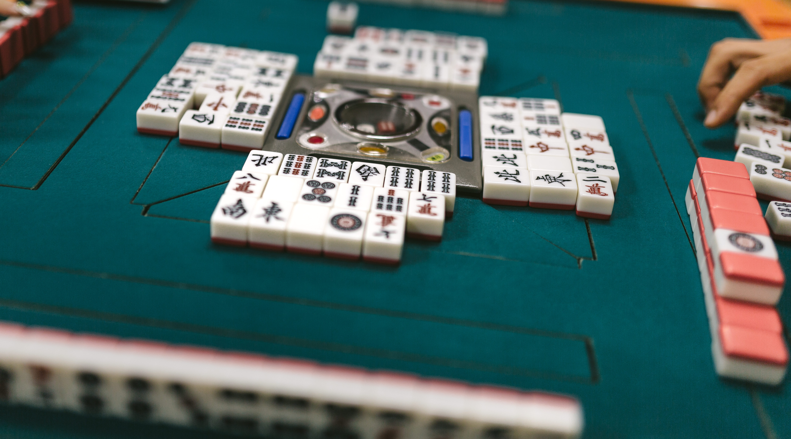
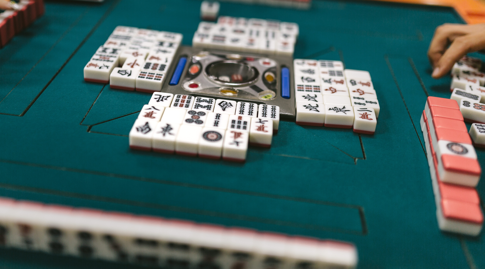

ABOUT ME
 


Basic information
出生地は名古屋(だそう)です。物心がついたころには大阪府で暮らしていました。
大阪府の登美丘高校を卒業。
大学生の時に大阪市内で一人暮らしを始めました。
その後長いフリーター生活を経てIT業界で働くことになりました。
My Favorite
最近の休日は少しでも技術レベルを高めるためにもっぱらプログラミングの学習をしています。 プログラミング言語ではPHPやPythonに興味があり、動画サービスなどを活用し、独学で学んでいます。 仕事で使う言語がPHPなのでそれを中心に知識を増やしています。 春や秋など天気の良い日には公園で本を読んだりゆっくりすることがお気に入りです。 その他はSNSを通じて有益な情報を探すことやYouTubeで新しい発見をすることが最近のお気に入りです。